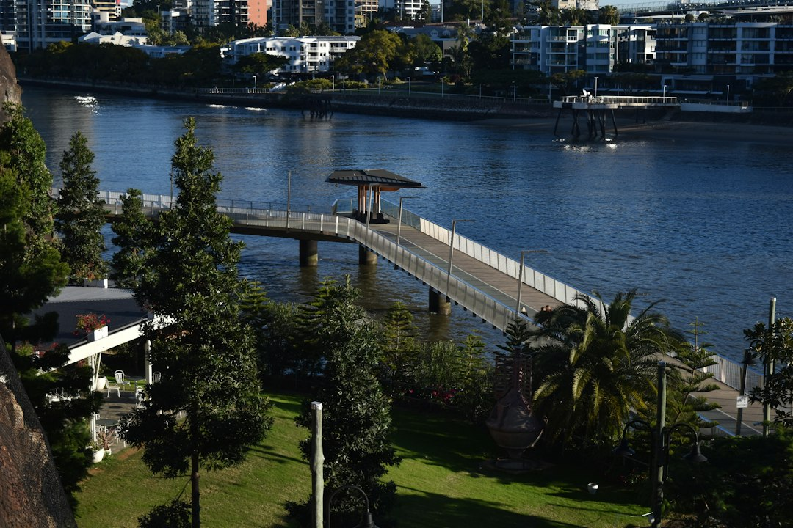

A Brisbane retaining wall quote should start with the site facts: height, length, access, what sits above the wall and whether a fence, driveway or pool adds load. The source page lists timber sleeper, concrete sleeper and core-filled besser block walls, plus repairs, fencing, pool barriers and gates. It also gives an indicative timber sleeper guide of around $300-$450+ per square metre, with approvals, engineering and drainage checked before quoting.
For homeowners comparing retaining wall installation brisbane options, the useful starting point is not a material list, but how the block, boundary, drainage and fence all interact.
Retaining Wall Installation Brisbane Explained
QLD Retaining and Fencing frames many sloped-block projects as two connected trades: a retaining wall holding ground back, and a fence that may need to sit on or near it. That changes the quoting conversation. A fence on a wall is assessed as part of the combined height, and a wall carrying a driveway or pool behind it may need a different engineering response because of surcharge load.
The practical question for a Brisbane homeowner is whether the quote separates the important parts. Excavation, drainage, backfill, materials, engineering and fencing should be visible enough to compare. A single round number can hide whether subsoil drainage has been treated as structural, whether access has been considered, and whether approval triggers have been checked against the actual site.
Who this applies to
This guide is most relevant when a block falls away, an old timber sleeper wall is leaning or rotting, or a boundary fence needs to be rebuilt after the wall is replaced. The source page describes these as common starting points, especially where established cuts are reaching the end of their life.
- Homeowners replacing timber sleeper walls that have aged out.
- Owners planning a new fence where ground levels change along the boundary.
- Properties where a pool, driveway or heavier structure sits above or behind the wall.
- Projects across Brisbane, Ipswich, the Gold Coast and the Sunshine Coast where council and ground conditions affect the quote.
It is less useful for small garden edging where no fence, load or approval question is involved, although the same discipline of measuring height, length and access still helps.
Material choice is a site decision
The published service list names timber sleeper, concrete sleeper and core-filled besser block retaining walls. Treat those as options to test against the block rather than as a simple good, better, best sequence. Timber sleeper is described as a common entry-point build for garden edges and lower cuts. Concrete sleeper is positioned for longer-life reinforced panel walls between galvanised posts. Core-filled besser block is described for taller structural retaining where timber and segmental block fall short.
Repairs and replacement also need an honest diagnosis. A leaning, bulging or rotted wall may be a replacement job rather than a patch, especially if a new fence has to sit on whatever remains. Ask whether the contractor is quoting the wall face area, how drainage is being handled, and what assumptions have been made about truck access and spoil removal.
Local checks that actually change the job
The source page names different site patterns across South East Queensland rather than treating the region as one soil type. Brisbane is described through ridge-and-gully blocks off the Taylor Range, with older cut-and-fill walls. Ipswich is described with heritage-era reactive clay near the Bremer and newer Greater Springfield estates where wall and fence can go in together. The Gold Coast includes canal and lake-edge fill, hinterland grade and salt air affecting fence hardware. The Sunshine Coast includes Buderim basalt clay, soft river flats and council permitting attention.
Those details should lead to questions, not assumptions. Ask what council trigger has been checked, whether engineering is required, how drainage exits the wall, and whether pool barrier or gate work changes the design. For a shorter companion overview, this Brisbane retaining wall installation guide sits alongside the same topic.
How to read a quote before signing
A useful quote should let you compare the job, not just the price. ASIC Moneysmart's renovation guidance is a helpful external reminder to plan the budget before committing, and that principle applies neatly here. The source page says homeowners are often worried about whether the quote is fair, so the quote should show enough detail to test fairness.
Give the contractor the suburb, rough height and length, what is sitting above or behind the wall, and how vehicles can access the site. Then look for written, itemised inclusions: excavation, drainage, backfill, material type, fence or gate work, engineering and approvals. If the wall and fence are quoted in separate conversations, check who is responsible for the connection between them.
- Measure the visible wall. Record rough height and length so the quote can be compared by wall face area.
- Describe what sits above it. Tell the contractor about fences, driveways, pools or other loads behind the wall.
- Check approvals early. Ask which council or engineering triggers have been checked before accepting a price.
- Separate inclusions. Look for excavation, drainage, backfill, wall material and fence work as visible quote items.
| Option | Where it may fit | Quote question |
|---|---|---|
| Timber sleeper | Garden edges and lower cuts | Is the height and ground load suitable for timber? |
| Concrete sleeper | Longer-life reinforced panel walls | Are posts, drainage and access itemised? |
| Core-filled besser block | Taller structural retaining | What engineering and approval triggers apply? |
| Repair or replacement | Leaning, bulging or rotted existing walls | Is patching realistic, or is replacement needed? |
Common questions
What affects the cost of a Brisbane retaining wall? The source page says cost depends on material and wall face area, which is height multiplied by length. It also points to access, excavation, drainage, backfill and what sits above the wall as quote inputs.
Can a fence be installed on top of a retaining wall? The source page says a fence sitting on a retaining wall is assessed on the combined height. That is why wall and fence planning should happen together before a number is accepted.
Which materials are mentioned for retaining walls? The published service list names timber sleeper, concrete sleeper and core-filled besser block walls, along with retaining wall repairs and replacement.
Why does drainage keep coming up in quotes? The source page treats subsoil drainage as structural, not optional, on retaining wall quotes. A useful quote should show how drainage is included rather than burying it in a lump sum.
This guide covers practical quote checks for retaining walls, fencing, approvals, drainage and site conditions across South East Queensland.